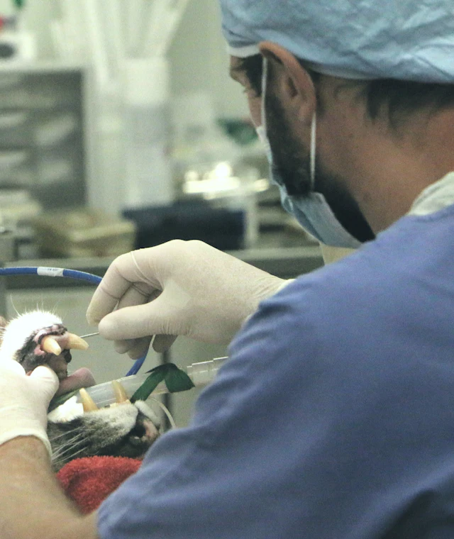
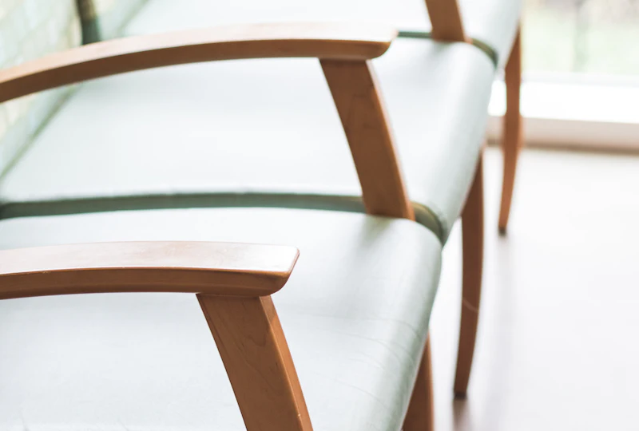
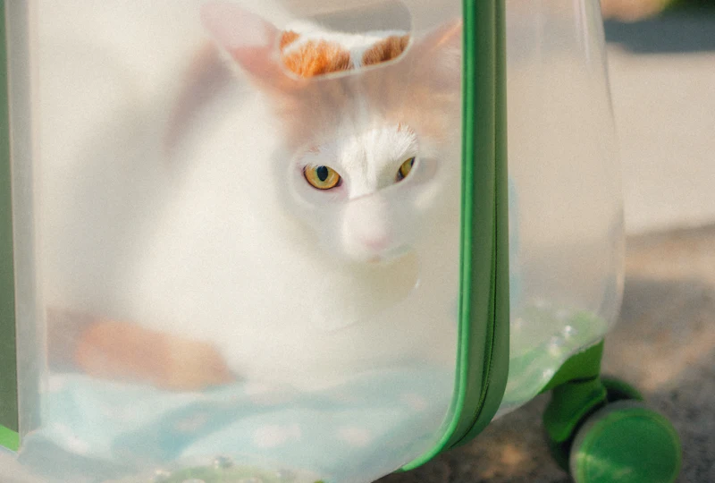
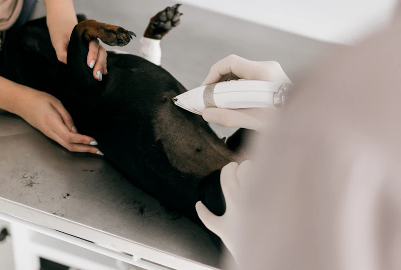
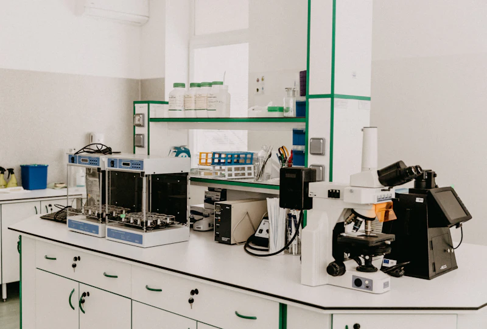
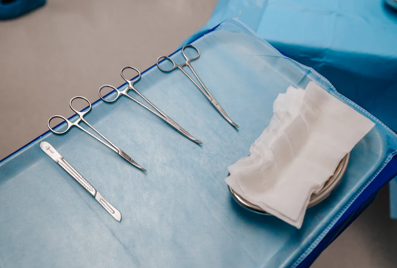
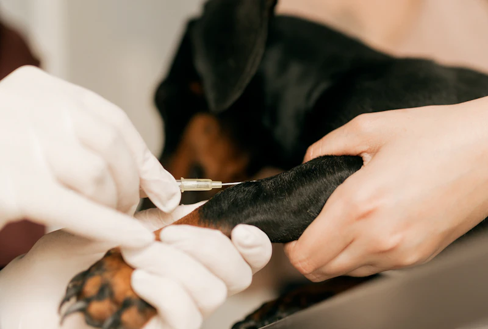

Dra. Lucía Paredes
Dirección médica y medicina interna
«Prefiero explicarte dos veces antes que dejarte con una duda.»
Atiende: lun, mié y vie · 8:00–16:00
Equipo ficticioProyecto ficticio / demo — no brinda atención veterinaria real
Cuatro veterinarios y una forma de trabajar: te explicamos antes de hacer algo, y siempre con presupuesto.
Dirección médica y medicina interna
«Prefiero explicarte dos veces antes que dejarte con una duda.»
Atiende: lun, mié y vie · 8:00–16:00
Equipo ficticio
Cirugía y odontología
«Una cirugía empieza en la conversación de antes.»
Atiende: mar, jue y sáb · 10:00–18:00
Equipo ficticio
Medicina felina y conejos
«Un gato tranquilo se examina mejor. Por eso no hay prisa.»
Atiende: lun a vie · 12:00–20:00
Equipo ficticio
Coordina la guardia nocturna y las emergencias
«De noche también se explica todo con calma.»
Guardia: dom a jue · 20:00–8:00 · vie y sáb, turno rotativo del equipo
Equipo ficticioTodo en un mismo lugar, para no mandarte a otro sitio por un examen. Ubicación demostrativa: Surco, Lima.

Para perros y conejos, con agua fresca y espacio para que nadie se amontone.

Separada de los perros, con repisas para dejar la transportadora en alto.

Tres consultorios; puedes quedarte con tu mascota durante toda la consulta.

Hemogramas y bioquímica con resultados el mismo día.

Anestesia monitoreada y un veterinario dedicado solo a vigilarla.

Monitoreo 24 h con veterinario presente, y mensajes diarios con novedades.
Ningún examen ni procedimiento sin que sepas qué es y cuánto cuesta.
Te vas con el plan, las dosis y los horarios en papel y por mensaje.
Después de una cirugía te escribimos para saber cómo sigue.
La primera consulta es el mejor momento para hacer todas tus preguntas.